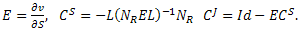

Metabolic Control Analysis
The metabolic control analysis quantifies how variables, such as fluxes and species concentrations, depend on the systems parameters.
If the systems consists of r reactions and m species, then
the matrices of control coefficients includes m-by-r elasticity matrix E,
m-by-r concentration control matrix C S
and r-by-r flux control matrix C J calculating by the formulas

Here v is a vector of reaction rates, S is a vector of species concentrations,
N = L × NR is the stiochiometric matrix decomposition generated by the
mass conservation analysis, and Id is r-by-r identity matrix1.
We also scaled all elements Ei,j, CSi,j and CJi,j
of these matrices with the coefficients
Sj / vi, vj / Si and vj / vi
respectively.
References
- C Reder,
"Metabolic control theory: a structural approach".
J. Theor. Biol., 135:175-201, 1988.